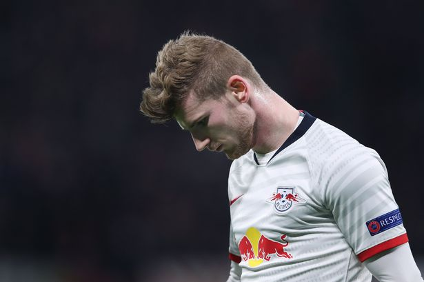

3. Freiburg’s Resilience and Set Pieces Make them Tough to Play Against
Though Leipzig dominated most of the possession, key set pieces defined the outcome of the match. Freiburg were quick to make the most of their set pieces and limited opportunities. Manuel Gulde’s clever but perhaps lucky flick from a corner resulted in their only goal. Freiburg looked dangerous with their corners and were only a few centimeters away from stealing a win in Leipzig when Robin Koch’s header was ruled offside by VAR. Freiburg’s resilience under Christian Streich has made them very tough to play against as they beat Leipzig in their previous meeting back in October. The point sends them to 7th and creeping into the European positions. Streich and Co. can look forward to their next few games as they face relegation-threatened Werder and Frankfurt in very poor form.
4. Leipzig Deserved to Win: Their Poor Finishing Cost Them
Leipzig pinned down the entire Freiburg team in their own half for large parts of the game. They dominated the possession and the shots but seemed disjointed in attack especially in the first half and signs of not playing for 2 months were clear. Freiburg goalie Alexander Schwolow was very busy and deserving of man-of-the-match in my opinion. His 7 saves and a crucial save to deny a Timo Werner 1 vs 1 kept Freiburg in the game. Substitute Ademola Lookman also missed a close-range 1 vs 1 along with more efforts from Yussuf Poulson and Christopher Nkunku. Nagelsmann’s other attacking substitutions with Marcel Sabitzer and Patrik Schick helped reenergize the attack as they found the equalizer with a Poulsen strike and searched for the win but in the end, it was too little too late as inconsistent finishing ultimately haunted Leipzig.
5. Timo Werner’s Struggles Continue
Werner found it difficult to receive service and use his deadly pace. Against Freiburg’s very defensive low-block, he was forced to drift wide and drop deep into midfield to receive the ball. Like many other Leipzig players like Yussuf Poulson and sub Ademola Lookman, his finishing was wasteful and subpar. After a very hot start in the first half of the season, Werner has cooled down with only 1 goal in his last 8 games in the Bundesliga. Performances like these raise questions about Werner’s effectiveness in a heavy-possession team against low-blocks should he join Liverpool next season.
